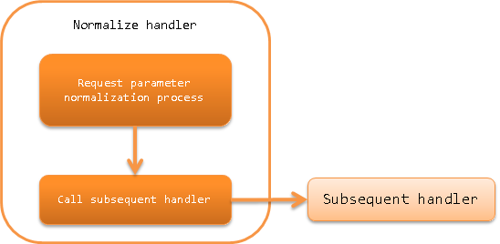

6.2.15. Normalize Handler¶
Table of contents
This handler normalizes the request parameters sent by the client.
This handler performs the following process.
- Normalization process of request parameter
The process flow is as follows.
{kind=link}
6.2.15.2. Module list¶
<dependency>
<groupId>com.nablarch.framework</groupId>
<artifactId>nablarch-fw-web</artifactId>
</dependency>
6.2.15.3. Constraints¶
- Place this handler after the Multipart Request Handler
- This handler accesses the request parameters. Therefore, this handler must be configured after the Multipart Request Handler.
6.2.15.4. Normalization process provided as standard¶
The following normalization process is provided as standard.
- Normalizer that removes white space before and after the request parameter ( TrimNormalizer ) [1]
6.2.15.5. Add the normalization process¶
This handler is the default action, and the normalizer that removes the white space [1] before and after the request parameter is enabled.
When the normalization process is added to the project requirements, create an implementation class Normalizer and configure in this handler.
An example is shown below.
- Implementation example of normalizer
public class SampleNormalizer implements Normalizer { @Override public boolean canNormalize(final String key) { // If num is included in the key value of the parameter, normalize the parameter return key.contains("num"); } @Override public String[] normalize(final String[] value) { // Remove the comma (,) in the parameter final String[] result = new String[value.length]; for (int i = 0; i < value.length; i++) { result[i] = value[i].replace(",", ""); } return result; } }
- Define in the component configuration file
Configure the normalizer to be applied as shown in the following configuration example. When multiple normalizers are configured, the normalizing process is executed sequentially from the one configured higher. Therefore, if the normalization process has order, pay attention to the configuration order.
<component class="nablarch.fw.web.handler.NormalizationHandler"> <property name="normalizers"> <list> <component class="sample.SampleNormalizer" /> <component class="nablarch.fw.web.handler.normalizer.TrimNormalizer" /> </list> </property> </component>
Tip
When the handler is configured as follows without configuring the normalizer, a normalizer that removes the leading and trailing whitespace provided by default is automatically applied.
<component class="nablarch.fw.web.handler.NormalizationHandler" />
| [1] | (1, 2) For the definition of whitespace, see Character#isWhitespace |